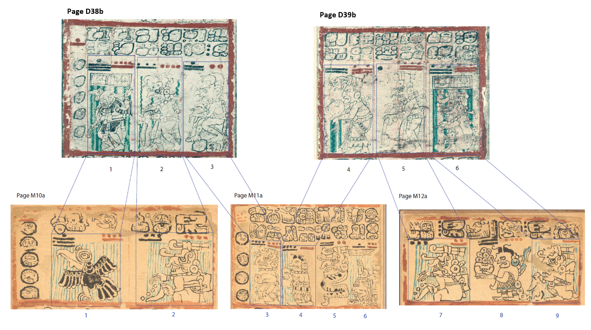
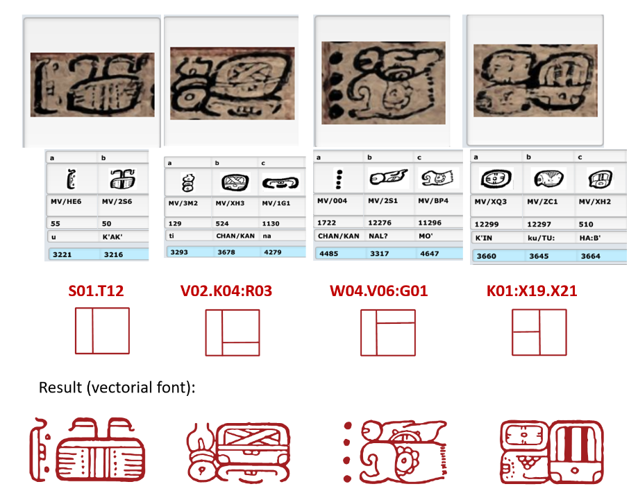
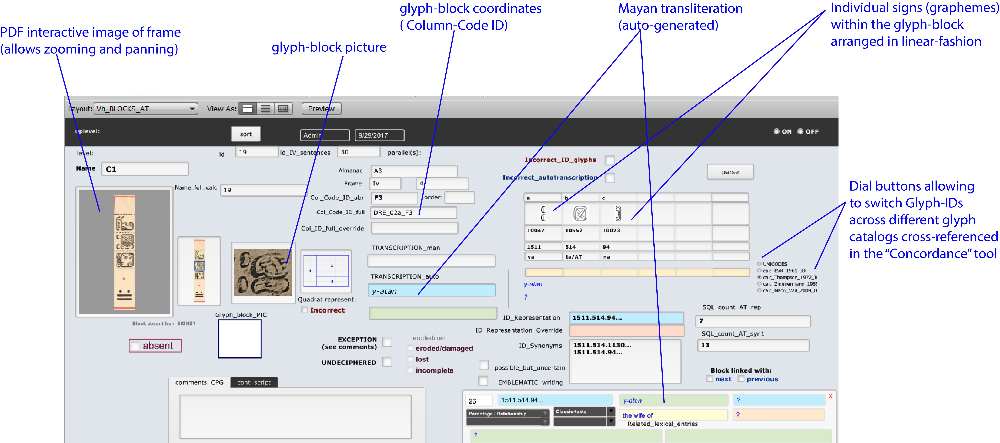
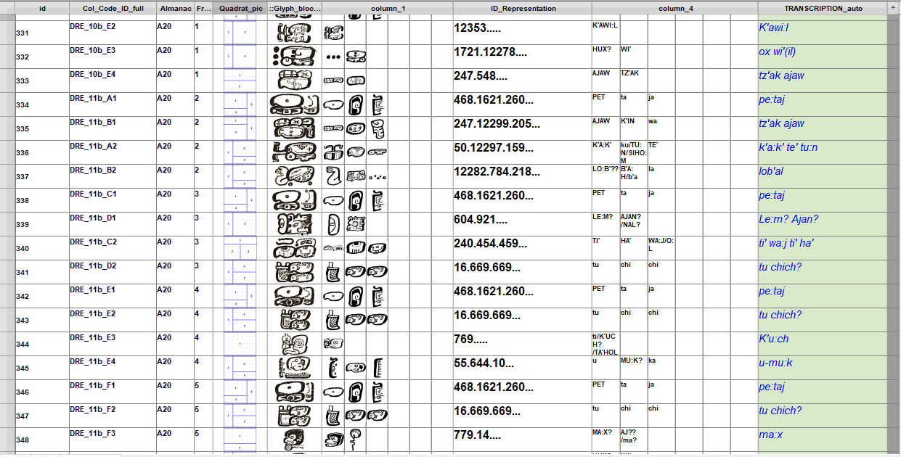

Introduction
In 2015, our team began work to get the Mayan hieroglyphs into the international standard Unicode, so Mayan text can be reliably interchanged on computers and other devices. Thanks to collaboration with standards experts and recent advances in computer technology and Mayan decipherment, the work to encode Mayan in Unicode has progressed significantly from the state we reported at DH2016 [1]. This paper will describe the challenges that prevented scholars from encoding Mayan in the past, and the strategies we used to overcome these hurdles. We will also give examples of the rapidly expanding repository of digitally encoded, machine-readable Mayan texts, and report on the implications for future research.
|

|
| Figure 1. The first two Mayan texts selected for encoding in the Unicode format: parallel “cognate” almanacs on the Dresden (D38b-D41b) and Madrid Codices (M10b-M13a). Cf. Bricker and Bricker 1988; Aveni et al. 1996: Fig. 10; Aveni 2004:158-159 |
Past Problems and Current Approaches
Early attempts to apply computational approaches to Mayan decipherment from the late 1960s and 1970s proved premature, given the technological limitations of the time [4; 8]. In addition, the stage of decipherment then allowed only a fraction of Mayan syllabic and logographic signs to be read with any certainty (probably less than 30%), compared to what is possible today. Subsequently, a number of Mayan database projects attempted to cover the full corpus of Mayan texts [2; 11; 15], encompassing thousands of inscriptions and spanning almost 2,000 years across multiple regions. Given the wide range of scribal practices across such a broad spectrum of space and time, it has proven difficult to identify a core set of characters.
Our project, on the other hand, decided to focus on the extant Mayan codices, three of which are preserved in libraries in Dresden, Madrid, and Paris (see figure 1). These Codices are widely accepted to originate in Pre-Columbian Yucatan, Mexico, during the late Postclassic period (ca. AD 1250-1519). This strategy proved fruitful, as these ancient documents attest to much greater consistency in the range of scribal practices, and make use of a relatively limited, time-specific, common repertoire of signs. Ultimately, inscriptions and earlier Classic-period texts can be added, building upon the base repertoire of the Codices.
|

|
|
Figure 2. Examples of our workflow relying on glyph-block cluster arrangements or “quadrats” for rendering complex Mayan signs from the Dresden Codex. |
|

|
|
Figure 3. Database screenshot from our new semi-automated Mayan transliteration and translation functionality |
Format
Because most database projects operated under largely non-standardized formats, Mayan textual data could not be widely shared, but was limited to those institutions that shared the same (non-standard) formats. In contrast, we centered our efforts on getting the script into the international character encoding standard Unicode. The advantages of Unicode include:
Technical Issues and Solutions
The degree of visual complexity prevalent in the Mayan script has posed unique challenges, both in describing the data in a standardized way, and being able to accurately render signs with standard font protocols. This complexity includes ligation of signs, horizontal and vertical joining, truncation, and infixation (figure 2), as well as identification of cluster arrangements (“quadrats”) and the placement of signs in the clusters. To our knowledge, no other projects beside ours have focused on identifying all attested cluster arrangements in the codices consistently under the Unicode Standard [ 12] while describing sign-positioning in ways supported by new font and software upgrades.
To overcome the technical challenges involved, we are working directly with Unicode specialists and implementers, whose experience in encoding other writing systems has informed our methodology, specifically in describing the cluster arrangements and the database structure. Thus, our description of the cluster arrangements drew from work on Egyptian hieroglyph quadrats by Andrew Glass [ 3]. Based on input from collaborators, the database has been set up so it can generate real-time semi-automated transliterations and translations of Mayan hieroglyphs into English and Spanish (figs. 3-4). This system is also capable of breaking down visually complex glyph-block cluster arrangements (“quadrats”) into their constituent individual signs and displaying them in linear fashion.
|

|
| Figure 4. Database screenshot from our new semi-automated Mayan transliteration and translation functionality (multi-record table view). |
Research Results
Our analysis of the main textual contents of the Mayan Codices has enabled us to attain a full analysis of all the extant hieroglyphic inscriptions in the Mayan Codices Note: Carlos: Were you going to include Table 1? (Table 1). It also resulted in the identification of the full range of permutations by which individual signs (graphemes) conform into glyph-block arrangements or specific cluster-configurations (i.e. “quadrats). These quadrats unfold into 167 different types [ 12], which we ordered into classes, ranging from one up to six signs per glyph-block (Figs. 3-4). We have also developed a “mapping engine” able to segment the Mayan Codices into a meaningful, hierarchical arrangement of their constitutent levels and segments. This tool can help to identify the underlying thematic composition and structure of the Codices and other complex texts at different levels (i.e. glyph-block, phrases, frames, almanacs, pages, sections/chapters, volume), in much the same way as scholars of Western literary tradition have been able to identify medieval text structures [14]. For instance, this engine allows for laying out the structure of the Dresden Codex as a document composed of 74 pages, plus four blank pages, arranged into 22 sections, 96 almanacs and tables, and 575 frames. Note: “Paramount to” doesn’t quite work here in English; I suggest alternate wording that I think captures the idea. A key component of our efforts has been the creation of a new Unicode-based “glyphary” tool, a comprehensive digital catalogue of characters (graphemes) exclusively occurring in the Codices, which substantially departs from previous efforts [4;11;16;19] by its underlying methodology and novel taxonomy. In this methodology Note: The sentence was getting too long (for English readers!), so I’d suggest breaking it up. You can insert a more appropriate term in place of “methodology”, if needed. alphanumeric codes are tied together to code points assigned by the Unicode Standard. In developing this glyphary tool, we relied on previous collaborations between one of us (Pallan) and teams at IDIAP and UniGe (Switzerland) for developing digital multimedia resources and machine vision algorithms suitable for Mayan [6;7].
Implications of Research
Based on the above results, our paper provides a critical look at the implications for Mayan scholarship and the humanities, including the degree to which the codical sign-set compares to the earlier sign-sets from the Classic-period monumental inscriptions. We also explore specific idiosyncrasies and the global patterns that can be identified within codical texts and datasets, partly by programming highly specific SQL (Standard Query Language) queries for addressing these and other culturally significant questions. For example, which lexical terms occur with greater frequency, to which semantic and grammatical categories do these terms belong? Which major languages are represented and what is the affiliation of the lexical terms attested [9; 17;18]? We also develop indicators that permit approaching complex scribal features and practices within the codices, such as the degree of phoneticism and the ratio of individual signs per glyph-block (see Table 1 below). Our system also allows precise mapping of undeciphered and problematic signs and identifies the contexts in which they occur.
| Codex: | DRESDEN | MADRID | PARIS |
| Number of extant pages | 74 pages | 112 pages | 24 pages |
| Number of almanacs | 96 (75 almanacs + 21 tables) | 237 (almanacs & tables) | 18 (almanacs & tables) |
| Number of frames | 575 / 1659 total | 889 / 1659 total | 192 / 1659 total |
| Number of glyph-blocks |
2951 / 7122 41.43% |
3340 / 7122 total 46.89% |
831 / 7122 total 11.66% |
| Blocks per frame ratio | 5.13 blocks per frame | 3.75 blocks per frame | 4.32 blocks per frame |
| Number of graphemes (main-text signs, not counting calendric grid) |
7208 / 17147 total 42.03% |
7913 / 17147 total 46.14% |
2026 / 17147 total 11.81% |
| Signs per glyph-block ratio: | 2.442 signs per glyph-block | 2.369 signs per glyph-block | 2.438 signs per glyph-block |
Table 1. Comparative statistics derived from analysis of three extant Mayan Codices
Future Work and Goals
Plans for future work include further development of advanced OpenType Mayan font —in close collaboration with Andrew Glass— providing more accurate rendering of linear signs into glyph-blocks. We are also planning to expand our resources into the realm of the monumental stone inscriptions, in collaboration with Dr. Gabrielle Vail and other researchers, with the aim of generating robust, representative new datasets of texts from all the major Classic and Terminal Classic scribal traditions. thereby substantially increasing the range of chronological/regional variability of our textual repositories.
To facilitate collaborative team data editing and analysis, we are currently migrating some of our core database functionalities into a MySQL-based server that offers greater compatibility with widely used open source solutions such as SQLite and MariaDB. On the longer term, we are collaborating with the READ ( Research Environment for Ancient Documents ) co-creators Andew Glass and Stephen White [ 13 ] to adapt and expand this powerful engine into a “Mayan-READ”. This tool would provide scholars and humanities students with the full-range of our open-access online resources, allowing them greater access and interactivity with our datasets, plus the ability to contribute in expanding a Unicode-based repository of digitally encoded, machine-readable Mayan hieroglyphic texts. In so doing, we are also seeking to establish innovative collaborations with cultural institutions and research groups (such as INAH in Mexico). Part of this effort involves organizing workshops, where our workflow and methodologies can be learned by other teams in Mexico and other locations, and ultimately put into practice in ways that can have greater impact to benefit the humanities research community as a whole.